荒崎海岸
| 日付 | 2015年6月20日（土） |
|---|---|
| メンバー | 家族（妻、長女・4歳、長男・2歳） |
| アクセス | 車 |
子供達は山よりも海が好きなようで、今週末は海に行くことにする。
目的地は、前回と同じ荒崎海岸だ。
子供が遊べる場がたくさんあり、アクセスも良いため、
磯遊びは当分ここに通うことになりそうだ。
来る途中でカーナビが故障してしまい、迷いに迷ってようやく到着する。
前回よりも1時間遅れで到着だ。
荒崎海岸はそこそこ広い。今回は前回とは違うスポットで遊ぶことにする。
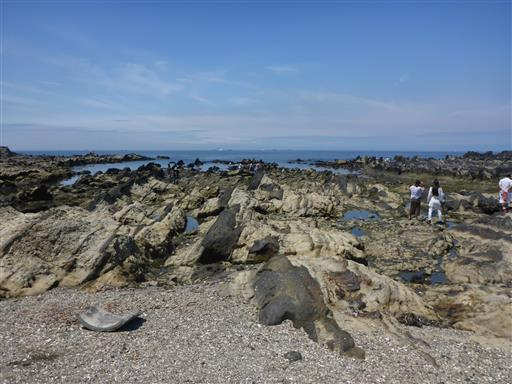
早速ビーチにテントを張る。
梅雨の季節で直前に晴れ予報に変わったためか、
今日は前回よりも人の数がかなり少ない。
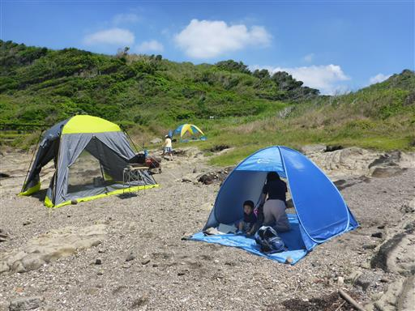
前回の反省を踏まえて、今回は靴や網を買い揃えた。
これで遠慮せずに水の中に入って行ける。
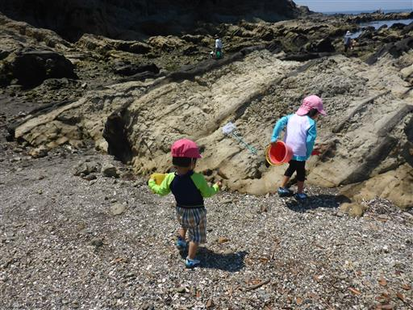
水から遠い場所の岩場にはフナムシがたくさんいる。
前回は全く見かけなかったのだが、場所を変えたからか季節を変えたからか…
集団で動いていると、やっぱり気持ち悪い。
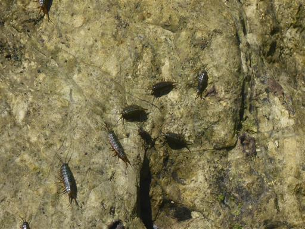
子供達は、早速思い思いに遊び始める。
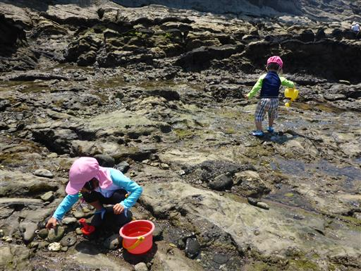
岩礁が多く、中の方まで波が来ないので安心して遊べる。
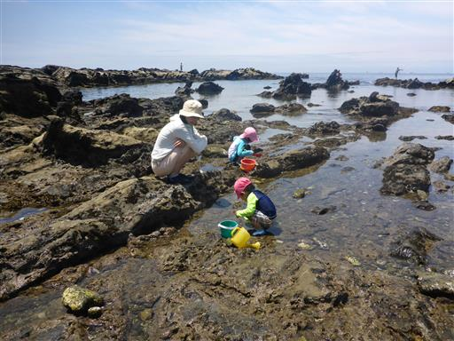
都心から少し離れているため、水は比較的きれいだ。
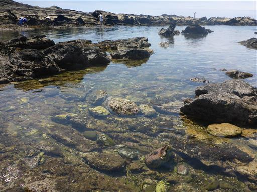
ヤドカリやハゼほどではないが、カニの数は非常に多い。
10匹程度はすぐに捕まえられる。
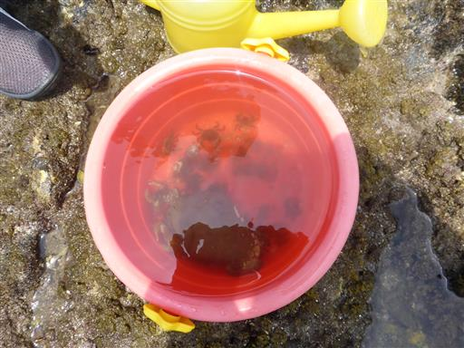
海に行くと良く見かける謎の生物。
調べたところヒザラガイという貝らしい。
全く動かず、固くて引き剥がすことも不可能だ。
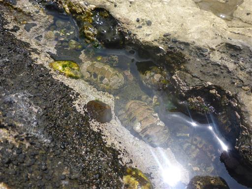
ウノアシ。こちらも岩にピッタリと張り付いている。
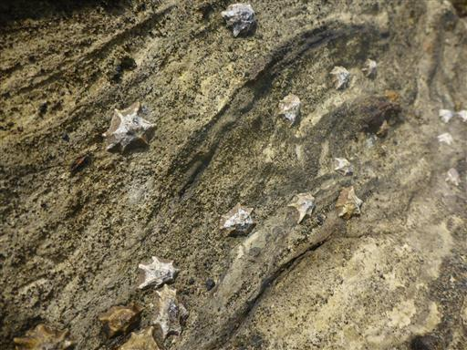
この辺りは起伏が多い地形だ。背後に見えるのは夕日の丘。
上に登ると良い眺望が得られるそうだが、磯遊びに忙しいので行く機会はない。
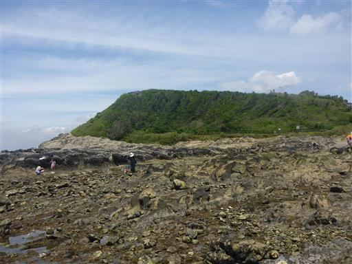
きれいなタイドプール。ここは少し深い。
季節が進んでもっと暑くなれば、こういうところで泳ぐのも楽しそうだ。
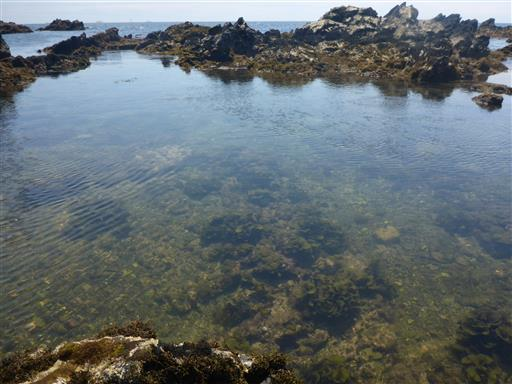
深いところでは小魚も見られる。
昼食をとって少し遊んだら、昼寝の時間なので撤収することにする。
人が少なかったため、ゆったりと遊ぶことができた。
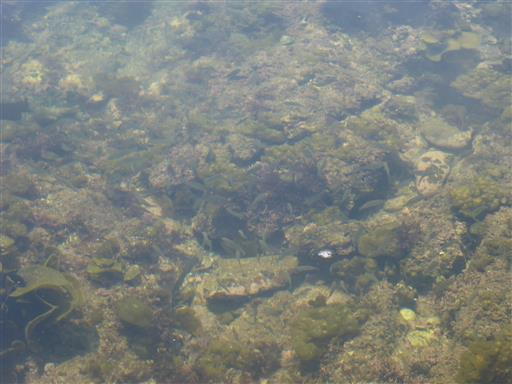
他の記録